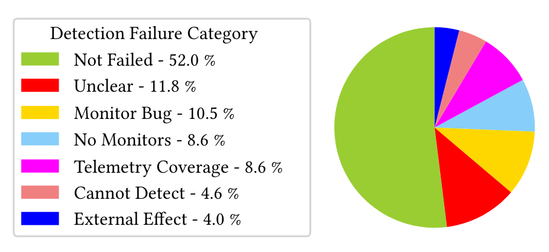
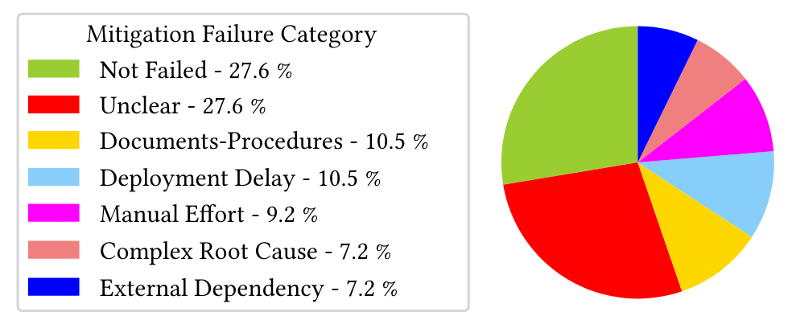

- Incident management: Continuous Incident Triage for Large-Scale Online Service Systems.
- How to Mitigate the Incident? An Effective Troubleshooting Guide Recommendation Technique for Online Service Systems.
- How Incidental are the Incidents? Characterizing and Prioritizing Incidents for Large-Scale Online Service Systems.
- Recommending Root-Cause and Mitigation Steps for Cloud Incidents using Large Language Models
- How to Fight Production Incidents? An Empirical Study on a Large-scale Cloud Service
什么是Incident？
在软件工程的软件维护方面，incident指软件发生的一些事件，而这些事件往往会导致系统一些崩溃、停机等。目前，许多在线服务系统都会受突发的事件而导致系统的崩溃、停止运行，从而给公司带来巨大的经济损失。
incident具有以下的生命周期：
Detection：检测器或人工发现incident的发生，该过程往往会产生对于incident的描述。
Triaging：根据incident的描述，对发生的incident进行分类，从而能够将incident分配给特定的人员去诊断、解决。
Diagnosis：对incident进行诊断，分析发生的原因。
Mitigation：采取措施，缓和incident，从而修复系统，减少带来的经济损失。
Triaging、Diagnosis两个阶段以及Mitigation阶段中相关措施的确定，目前主要还是通过工程师之间讨论来进行决定的，而由于人工的介入，会带来很大的延迟，因此，上述论文主要探究这些过程的一个自动化。
Incident描述报告的格式
Title: Attach vm fails with connection timeout
Summary: The workspace is not associated with any vnet. Customer has a vm which is already running inside
a vnet. They like to attach that vm into [product omitted]. We tried the UI and CLI route, but still fails
with same connection timeout error. Error points that it resolves to some public ip [...]
root cause: It is not supported to attach a private vm to a public workspace directly.
mitigation: Open a task to provide better official document for customer on the topic of virtual machine.
主要关注的部分为Incident的概述、详细情况、根本原因（如果有的话）。在实际的生产过程，往往监测器会自动生成对于incident的一个描述，而其导致原因和缓和的方法需要人工进一步的分析。
相关研究对incident对根因进行分析，具体可分为以下种类：
60%的incident是由于非代码问题引起的，比如基础架构（CPU性能等）、依赖组件出现问题等引起的。
针对出现的故障事件，目前也有多种缓和的方法，而很多缓和的方法没有涉及到对于代码或者配置的一些修复，比如说回滚操作，云服务中更换正常的节点等。
尽管针对Incident已有一个比较成熟的分析、缓和路线，但是在实际的过程中，由于一些问题，会导致各种各样的延误，从而影响incident的发现、缓和过程。论文中，主要从detection和mitigation两个方面探讨导致延误的原因。
导致detection延误的原因

缺少相关的监测器以及一些特殊情况的监测无法覆盖，是导致detection delay的主要原因。
导致mitigation延误的原因

人工的介入、糟糕的文档说明（比如写的很烂的TSG）等是主要导致mitigation延误等原因。
通过与工程师的沟通，论文中也总结了对于一些优化的方法。
例如对于detection监测不到位的情况，可以增加一些特殊情况的测试用例，以便在对监测器进行测试的阶段就能够发现这些潜在的问题；而对于mitigation，可以提高自动化的一个程度，减少人工的一个干预等。
而从前面incident的生命周期也可以看出，有很大一部分的过程都需要自动化来代替人工的干预。因此，上面的论文主要通过对于incident的描述以及开会时的discussion进行分析，从而帮助定为incident的性质、缓解方法。